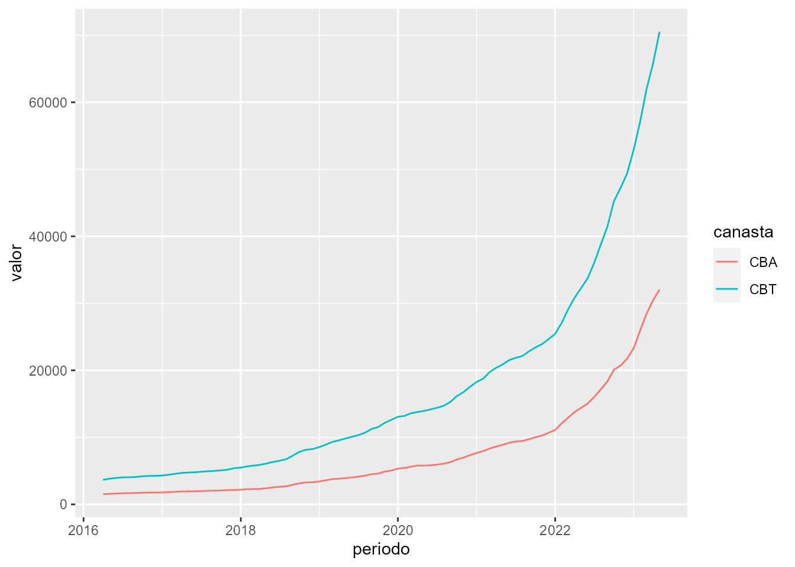

eph
vignettes/eph.Rmd
eph.RmdEl paquete eph tiene como objetivo facilitar el trabajo
con los microdatos de la Encuesta Permanente de Hogares. Este tutorial
busca ejemplificar un pipeline de trabajo más o menos típico para
mostrar el uso de las funciones del paquete.
Para instalar la versión estable del paquete usar:
install.packages('eph')Para la versión en desarrollo:
# install.packages('devtools') si no tiene instalado devtools
devtools::install_github("holatam/eph")get_microdata()
Obtengamos la base de microdatos de individuos para el tercer trimestre de 2018:
ind_3_18 <- get_microdata(
year = 2018,
period = 3,
type = "individual"
)Puede verse que la función requiere tres argumentos básicos que definen cuál es la encuesta que se desea descargar.
organize_labels()
Es posible etiquetar de forma automática el dataset descargado
previamente usando get_microdata() llamando a la función
organize_labels() (el resultado de esta operación no es
renombrar los valores o nombres de las columnas, sino agregar etiquetas
con esta información):
ind_3_18 <- organize_labels(
df = ind_3_18,
type = "individual"
)Descarguemos y etiquetemos la base de hogares del 3 trimestre de
2018. Podemos hacer uso de los %>% pipes de
magrittr:
hog_3_18 <- get_microdata(
year = 2018,
period = 3,
type = "hogar"
) %>%
organize_labels(.,
type = "hogar"
)calculate_tabulates()
Una de las operaciones más usuales al trabajar con la EPH son los
tabulados uni y bivariados. Para ello, el paquete cuenta con la función
calculate_tabulates(), la cual brinda la posibilidad de
obtener tanto resultados en valores absolutos como porcentuales, como
así también contar con la posibilidad de extrapolar los datos según el
factor de ponderación correspondiente:
calculate_tabulates(
base = ind_3_18,
x = "NIVEL_ED",
y = "CH04",
weights = "PONDERA",
add.totals = "row",
add.percentage = "col"
)
#> # A tibble: 8 × 3
#> `NIVEL_ED/CH04` Varon Mujer
#> <chr> <dbl> <dbl>
#> 1 Primaria incompleta (incluye educacion especial) 15.1 13.7
#> 2 Primaria completa 12.7 13.2
#> 3 Secundaria incompleta 22.9 18.5
#> 4 Secundaria completa 19.1 19
#> 5 Superior universitaria incompleta 10.4 12.4
#> 6 Superior universitaria completa 10.3 14.7
#> 7 Sin instruccion 9.6 8.6
#> 8 Total 100 100Así, si quisiéramos la misma tabla sin ponderar:
calculate_tabulates(
base = ind_3_18,
x = "NIVEL_ED",
y = "CH04",
add.totals = "row",
add.percentage = "col"
)
#> # A tibble: 8 × 3
#> `NIVEL_ED/CH04` Varon Mujer
#> <chr> <dbl> <dbl>
#> 1 Primaria incompleta (incluye educacion especial) 15.3 14
#> 2 Primaria completa 12.7 12.9
#> 3 Secundaria incompleta 22.9 18.8
#> 4 Secundaria completa 19.4 19.1
#> 5 Superior universitaria incompleta 10.3 12.2
#> 6 Superior universitaria completa 9.5 14.1
#> 7 Sin instruccion 10 8.9
#> 8 Total 100 100organize_panels()
Otra potencialidad del trabajo con microdatos de la EPH es la
capacidad de generar un pool de observaciones de panel. Este
procedimiento consta en identificar a una misma persona u hogar
encuestado en distintos trimestres, y permite realizar estudios sobre la
evolución de sus características con el correr del tiempo. Esto puede
generarse, para las bases individuales en eph con la
función organize_panels(). Para ello es necesario contar
previamente con las múltiples bases de datos que se deseen poolear, y
armar un objeto de tipo lista que las contenga.
### Armo vector con el nombre de las variables de interés incluyendo
# -variables necesarias para hacer el panel
# -variables que nos interesan en nuestro análisis
variables <- c(
"CODUSU", "NRO_HOGAR", "COMPONENTE", "ANO4",
"TRIMESTRE", "CH04", "CH06",
"ESTADO", "PONDERA"
)
### Descargo la base individual para el 2018_t1
base_2018t1 <- get_microdata(
year = 2018, period = 1, type = "individual",
vars = variables
)
### Descargo la base individual para el 2018_t2
base_2018t2 <- get_microdata(
year = 2018, period = 2, type = "individual",
vars = variables
)
### Armo el panel
pool <- organize_panels(
bases = list(base_2018t1, base_2018t2),
variables = c("ESTADO", "PONDERA"),
window = "trimestral"
)
pool
#> # A tibble: 25,411 × 17
#> CODUSU NRO_HOGAR COMPONENTE ANO4 TRIMESTRE CH04 CH06 ESTADO PONDERA
#> <fct> <int> <int> <int> <int> <int> <int> <int> <int>
#> 1 TQRMNORUTHMK… 1 1 2018 1 2 67 3 1008
#> 2 TQRMNORUTHMK… 1 2 2018 1 1 81 1 1008
#> 3 TQRMNORUTHMK… 1 3 2018 1 2 22 2 1008
#> 4 TQRMNOVQVHMO… 1 1 2018 1 1 62 1 886
#> 5 TQRMNORPYHMM… 1 1 2018 1 1 83 3 594
#> 6 TQRMNORPYHMM… 1 2 2018 1 2 79 3 594
#> 7 TQRMNOTSYHKM… 1 1 2018 1 2 79 3 700
#> 8 TQRMNOQTTHKM… 1 1 2018 1 1 38 1 700
#> 9 TQRMNOQTTHKM… 1 2 2018 1 2 33 1 700
#> 10 TQRMNOQRVHMM… 1 1 2018 1 1 64 1 546
#> # ℹ 25,401 more rows
#> # ℹ 8 more variables: Periodo <yearqtr>, ANO4_t1 <int>, TRIMESTRE_t1 <int>,
#> # CH04_t1 <int>, CH06_t1 <int>, ESTADO_t1 <int>, PONDERA_t1 <int>,
#> # consistencia <lgl>La función nos devuelve un data.frame similar a la base original, en
el cual cada fila es un registro individual, que consta de las
observaciones de las variables de interés especificadas, en dos periodos
de tiempo. En el período inicial las mismas conservan su nombre, y en el
siguiente (año o trimestre) aparecen renombradas con el agregado del
string _t1.
El trabajo que realiza la función es concatenar todas las bases
espeficadas y hacer un join, conservando sólo aquellos
individuos encuestados en los diferentes trimestres. La columna
consistencia evalúa si entre ambas observaciones un mismo
individuo figura con distinto sexo o con una diferencia absoluta de 2
años de edad.
pool %>%
organize_labels(.) %>%
calculate_tabulates(
x = "ESTADO",
y = "ESTADO_t1",
weights = "PONDERA",
add.percentage = "row"
)
#> # A tibble: 4 × 5
#> `ESTADO/ESTADO_t1` `1` `2` `3` `4`
#> <chr> <dbl> <dbl> <dbl> <dbl>
#> 1 Ocupado 88.7 4 7.3 0
#> 2 Desocupado 36.2 34.7 29 0
#> 3 Inactivo 7.5 3.5 88.8 0.2
#> 4 Menor de 10 anios. 0 0 3.7 96.3Un indicador frecuente construido con esta información es la
Matriz de Transición. Ella refleja como los individuos que
ocupaban una determinada categoría en el período inicial, se distribuyen
en cada una de las categorías en el período siguiente. La misma puede
construirse sencillamente utilizando la función
calculate_tabulates. En este ejemplo, la información
refleja que durante 2018, un 3.7% de los ocupados perdió su empleo en el
trimestre siguiente.
Dado que levantar muchas bases al mismo tiempo puede superar el espacio disponible en memoria, es posible hacer una selección de variables al mismo tiempo que se levantan las bases:
df <- get_microdata(
year = 2017:2019,
period = 1:4,
type = "individual",
vars = c("ANO4", "TRIMESTRE", "PONDERA", "ESTADO", "CAT_OCUP")
)
df %>%
sample_n(5)
#> # A tibble: 5 × 5
#> ANO4 TRIMESTRE PONDERA ESTADO CAT_OCUP
#> <int> <int> <int> <int> <int>
#> 1 2019 2 33 4 0
#> 2 2017 1 215 3 0
#> 3 2018 3 1491 3 0
#> 4 2018 1 261 3 0
#> 5 2017 1 290 3 0Con estos datos podemos crear por ejemplo la serie de asalarización
\(SO_{t} = \frac{\sum_{i=1}^n w_{i}TCP_{i}}{\sum_{i=1}^n w_{i}OCUP_{i}}\)
df <- df %>%
group_by(ANO4, TRIMESTRE) %>%
summarise(indicador = sum(PONDERA[CAT_OCUP == 3 & ESTADO == 1], na.rm = T) / sum(PONDERA[ESTADO == 1], na.rm = T))
#> `summarise()` has grouped output by 'ANO4'. You can override using the
#> `.groups` argument.
df
#> # A tibble: 12 × 3
#> # Groups: ANO4 [3]
#> ANO4 TRIMESTRE indicador
#> <int> <int> <dbl>
#> 1 2017 1 0.742
#> 2 2017 2 0.751
#> 3 2017 3 0.745
#> 4 2017 4 0.748
#> 5 2018 1 0.752
#> 6 2018 2 0.740
#> 7 2018 3 0.741
#> 8 2018 4 0.745
#> 9 2019 1 0.745
#> 10 2019 2 0.741
#> 11 2019 3 0.726
#> 12 2019 4 0.726calculate_poverty()
Un objetivo del paquete eph, es lograr automatizar el
cálculo de pobreza e indigencia del INDEC para las bases trimestrales1. El gran
problema es que no existe información publicada fuera de los informes de
prensa en formato pdf sobre los valores de las canastas básicas y
alimentarias.
No obstante, hemos desarrollado dos funciones que, de encontrarse disponibles dichos datos, podrían calcular de forma automática los valores de pobreza e indigencia. Mostraremos un ejemplo de juguete con dos datasets de la CABA y sus respectivos valores de canastas.
Existen dos funciones núcleo:
lineas <- get_poverty_lines()
lineas
#> # A tibble: 99 × 4
#> periodo CBA ICE CBT
#> <dttm> <dbl> <dbl> <dbl>
#> 1 2016-04-01 00:00:00 1515. 2.42 3664.
#> 2 2016-05-01 00:00:00 1561. 2.45 3831.
#> 3 2016-06-01 00:00:00 1614. 2.44 3943.
#> 4 2016-07-01 00:00:00 1666. 2.42 4034.
#> 5 2016-08-01 00:00:00 1675. 2.41 4042.
#> 6 2016-09-01 00:00:00 1711. 2.39 4090.
#> 7 2016-10-01 00:00:00 1739. 2.41 4192.
#> 8 2016-11-01 00:00:00 1763. 2.41 4248.
#> 9 2016-12-01 00:00:00 1767. 2.41 4258.
#> 10 2017-01-01 00:00:00 1789. 2.41 4312.
#> # ℹ 89 more rowsEsta función descarga los valores de las canastas alimentaria, básica (CBA y CBT) y la inversa del coeficiente de Engels… perdón, Engel (ICE) de la serie provista por INDEC. Esta es la serie para GBA, y es la que publica regularmente INDEC.
lineas %>%
select(-ICE) %>%
pivot_longer(cols = c("CBA", "CBT"), names_to = "canasta", values_to = "valor") %>%
ggplot() +
geom_line(aes(x = periodo, y = valor, col = canasta))
Para el calculo de la Pobreza e Indigencia se utilizan canastas regionales, que sólo aparecen en los informes Técnicos.
A modo de ejemplo, en la librería eph se encuentra la
base canastas_reg_example con la información necesaria para
realizar el cálculo
canastas_reg_example
#> # A tibble: 12 × 5
#> region periodo CBA CBT codigo
#> <chr> <chr> <dbl> <dbl> <dbl>
#> 1 Cuyo 2016.3 1509. 3872. 42
#> 2 Cuyo 2016.4 1570. 4030. 42
#> 3 GBA 2016.3 1684. 4053. 1
#> 4 GBA 2016.4 1756. 4232. 1
#> 5 Noreste 2016.3 1513. 3414. 41
#> 6 Noreste 2016.4 1568. 3539. 41
#> 7 Noroeste 2016.3 1472. 3292. 40
#> 8 Noroeste 2016.4 1525. 3412. 40
#> 9 Pampeana 2016.3 1676. 4034. 43
#> 10 Pampeana 2016.4 1746. 4209. 43
#> 11 Patagonia 2016.3 1735. 4742. 44
#> 12 Patagonia 2016.4 1813. 4963. 44A su vez, también se encuentra la tabla de
adulto_equivalente que permite construir la cantidad de
adultos equivalentes a nivel hogar, para multiplicar al mismo por la
canasta regional correspondiente, a fin de definir la línea a nivel
hogar (de acuerdo con la metodología propuesta por INDEC:
para identificar la unidad consumidora de referencia, o adulto
equivalente, se analizó en qué grupo de edad se ubicaba la mayor
concentración de población activa, y fue la categoría de hombres de 30 a
60 años de edad la que presentaba el mayor peso relativo dentro del
conjunto total de la población de referencia).
adulto_equivalente %>% head()
#> CH04 CH06 adequi
#> 1 1 -1 0.35
#> 2 1 1 0.37
#> 3 1 2 0.46
#> 4 1 3 0.51
#> 5 1 4 0.55
#> 6 1 5 0.60La función calculate_poverty calcula la pertenencia a
situaciones de pobreza e indigencia a nivel de los individuos siguiendo
la metodología de línea:
bases <- bind_rows(toybase_individual_2016_03, toybase_individual_2016_04)
base_pobreza <- calculate_poverty(
base = bases,
basket = canastas_reg_example,
print_summary = TRUE
)
#> # A tibble: 2 × 4
#> # Groups: ANO4 [1]
#> ANO4 TRIMESTRE Tasa_pobreza Tasa_indigencia
#> <int> <int> <dbl> <dbl>
#> 1 2016 3 0.0296 0.0136
#> 2 2016 4 0.0324 0.0122
base_pobreza %>%
select(CODUSU, ITF, region, adequi_hogar, CBA_hogar, CBT_hogar, situacion) %>%
sample_n(10)
#> # A tibble: 10 × 7
#> CODUSU ITF region adequi_hogar CBA_hogar CBT_hogar situacion
#> <fct> <int> <chr> <dbl> <dbl> <dbl> <chr>
#> 1 TQRMNOQPPHJLKRCDEHMH… 26000 Cuyo 0.77 1162. 2982. no_pobre
#> 2 TQRMNOQXXHJMLOCDEHIB… 35500 Noroe… 0.83 1222. 2733. no_pobre
#> 3 TQRMNORWTHKLLMCDEIKA… 92200 Pampe… 0.76 1274. 3066. no_pobre
#> 4 TQRMNOQRWHLMKUCDEFMD… 0 Pampe… 0.76 1274. 3066. NA
#> 5 TQRMNOQWQHKLLLCDEIJA… 39800 GBA 0.76 1335. 3217. no_pobre
#> 6 TQRMNORSPHKMKSCDEIHJ… 21000 Patag… 1 1735. 4742. no_pobre
#> 7 TQRMNORSPHMOQOCDEIJA… 1200 GBA 0.76 1335. 3217. indigente
#> 8 TQRMNOQXWHLMLOCDEGIB… 16400 Nores… 1.83 2870. 6476. no_pobre
#> 9 TQRMNOPQPHKOKSCDEFNF… 25000 Nores… 0.37 580. 1309. no_pobre
#> 10 TQRMNORXSHKOLOCDEHIB… 21640 Noroe… 0.67 1022. 2286. no_pobreEl calculo oficial se realiza sobre bases semestrales no publicadas↩︎